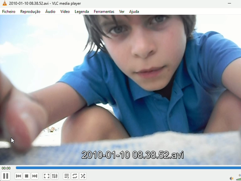

About Me ← back

I’m a Portuguese born in 2001 and raised in Porto. I went to law school, but since a tender age I was always principally interested in cybernetics — that doesn’t mean robots or transhumanism, but how complex systems interact. I quickly became disenchanted with the state of "mainstream" Portuguese public education, and instead went into Ensino Artístico Especializado: I had learned how to manipulate hardware as a child and was interested in Digicore and other Internet Art Movements, but in college, I went into the more analytical and "serious" side of things (mostly, as I viewed it, to fix absurd problems with the field) - which is Jurisprudence.
I did my LL.B at the Universidade Católica Portuguesa - Centro Regional do Porto. I became (even) more interested in technology and GNU/Linux around this time, through a different lens (starting “late” in my early 20's) after 2021's and 2017's crypto bull runs where I failed most of my classes since I was up all night day-trading memecoins and developing crypto projects as well as setting up Ethereum MEV bots (in order to front-run trades, good old "sandwich attack") constantly looking for vulnerabities in the Mempool that could be exploited. When I finally decided to actually learn a profession, an hard skill and stop "joking around" (I'm not cut for that lifestyle, really) is when I started my Substack, originally covering things about Web3 I learnt from my past, just to put up articles for friends originally.
Law school gave me the mega-cognitive framework I needed, taught me how to communicate effectively and think clearly/sharply (kudos to NSS for mentioning Gutachtenstil during an EU Law class in my 2L). I'm truly thankful for the Professors I had, and the friends I made along the way.
Any talk about high technology has to come with talk about the implications of it in our world, and as time went on, I started practicing law. I'm currently doing my dissertation for my LL.M. More of my public presentation became heuristics, but more importantly, a divestment from the world and the anti-human direction it carries itself.
I also became highly interested in epistemology or what could be called philosophy of science, which when I was younger I would’ve thought of as being silly word games. However, my experience in academia, especially with the philosophical bankrupcy of out post-logical positivist assumptions of basically all modern people makes me recognize that all institutionalized science is not only prey to external interests, but is built to be philosophically blind, which means it must be scientifically so.
Most crucially, I have become a Catholic, which was partially based in me questioning some of the assumptions that had led me to atheism as a young man (r/atheism was pretty popular in 2010, 4chan and 9gag were the prevailing zeitgeist). That in itself was one of the most mysterious developments, even to me, but certainly the most important. I won’t belabor it here because I had the mind of an atheist for years and I remember how the eyes glaze over at the very mention of religion, but nonetheless, that is the pinnacle of it all.
I have learned a lot as time has gone on, mostly how to correct errors. If you ever hear me say something that hurts your feelings, don’t worry - I never really intend to attack others, only my own past sins and misunderstandings. The most important thing is not to be emotionally attached to what might be what habits, ideas or dispositions are causing you harm.
Diogo Gaspar Sequeira, 24.08.2026, Vila do Conde.